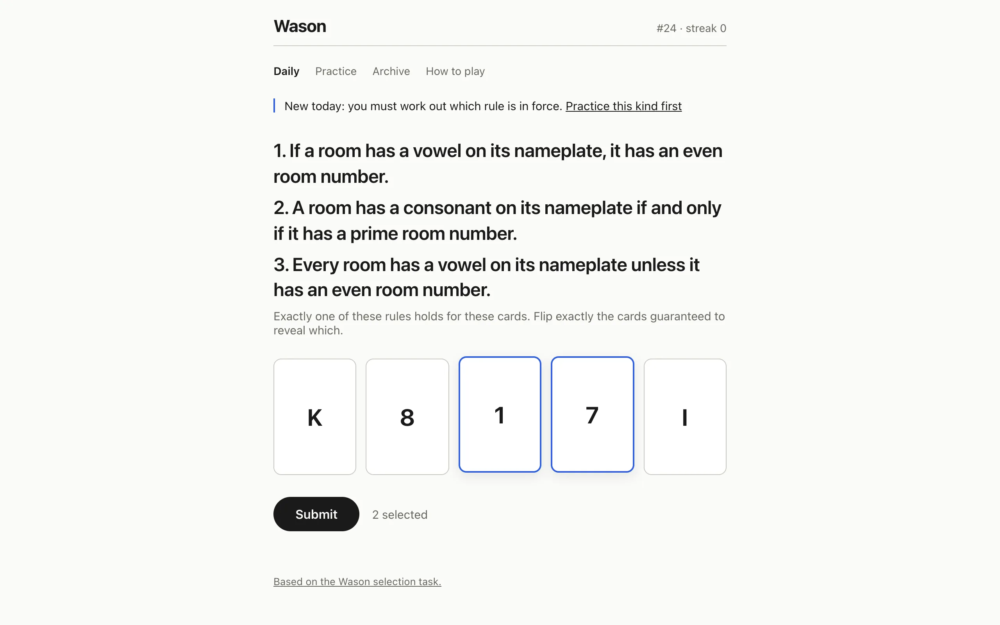
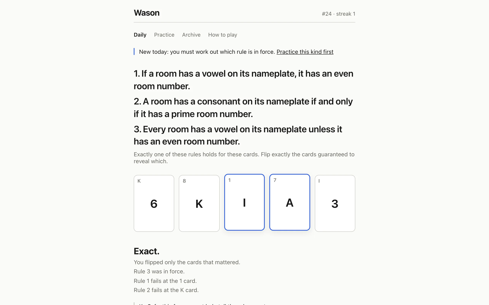

In 1966 Peter Wason put four cards on a table, E, K, 4 and 7, said each had a letter on one side and a number on the other, gave the rule "if a card has a vowel on one side, then it has an even number on the other side", and asked which cards had to be turned over to check it. The answer is E and 7. Fewer than one in ten people got it, and the most common wrong answer was E and 4. The selection task has been a fixture of the reasoning literature since his 1968 paper. This game deals a fresh version of it every day.
The seed is an FNV-1a hash of the date string fed to mulberry32, and the puzzle is generated in the browser when the page loads. Day one was 31 August 2026. The vocabulary is the letters A E I U B K R T, the numbers 1 to 8, four colors, and seven predicates over them (vowel, consonant, even, odd, prime, red, blue). Rule forms grow with the weekday. Monday is plain if-then over four cards. By Sunday it's if-and-only-if, if-not-then and unless over six.
What a date has to prove
A random rule over random cards is usually a bad puzzle, so a date becomes a puzzle only after the solver has checked it. For each card the solver enumerates every completion of the hidden face, eight letters or eight numbers or four colors, and evaluates the rule on each. If the rule is true in every completion the card is inert. If it's false in every completion the rule is already broken on the table. Otherwise the card is contingent, and the solver finds the minimal sets of hidden attributes that determine the rule's truth value, by grouping completions by what a reveal would show and checking that each group agrees. The puzzle has a unique answer only when every contingent card has exactly one minimal reveal set.
Beyond uniqueness, a standard day needs at least two required cards and never all of them, except for a biconditional, where flipping everything is the correct answer and I keep it. For implications and disjunctions the required cards must span both attributes, and at least one card must be inert, a tempting card that tells you nothing. No two visible faces may match. It tries up to 2,000 candidates from the day's stream before throwing.
Days where the right move is nothing
Roughly one non-Monday in eight is a trap, decided by a second hash of the date. Half the traps are vacuous days: the rule names live categories, but no visible face could be hiding a counterexample, and the exact answer is to flip nothing. The other half are broken days: exactly one visible face already violates the rule, and the answer is to say so rather than flip anything. Vacuous boards are rare at six cards, so if 5,000 attempts at the weekday's size fail the generator drops to five. Over the first year of dates I count 19 vacuous days and 18 broken ones.
The rest of the week has its own mechanics. Saturdays are multi-attribute days, where cards carry all three attributes and hide two, so a pick is a card plus a side, and picking an uninformative side is a new way to be wrong. Sundays are two-rule audits, where one flip can test both rules. Fridays are relational: the rule constrains neighbors ("every room with a vowel is immediately followed by one with an even number"), so no card can be judged alone and the solver works over every combination of hidden faces at once, checking that a set of flips settles the rule in every class of worlds that agree on what those flips show. Wednesdays are identification days, which is what the screenshot shows.

Puzzle #24 offered three rules and promised exactly one held. Testing rule 3 by itself would need K, 1 and 7. Telling the three rules apart needs only 1 and 7, and that's what the solver certifies: the smallest set of flips after which the faces pin down which rule survives, no matter what the flips show. Missing a required card gets the verdict "Not proven", adding one that couldn't matter gets "Proven, but wasteful", and only the exact set extends the streak.
Reading the English
Two of the rule forms needed a decision. "Every room has a vowel on its nameplate unless it has an even room number" is read as a disjunction, vowel or even, and "a room has a vowel only if it has an even number" is read as vowel implies even. Those are the textbook material readings. In speech, "unless" often carries the sense that a vowel room can't also be even, and "only if" gets heard as "if and only if". I went with the textbook because the solver needs one truth table per sentence, and I expect this is where most of the wrong answers on those days come from.